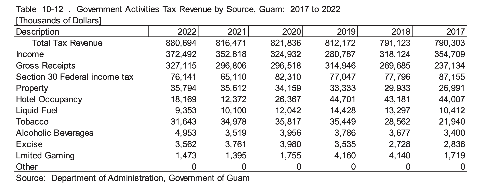

A data.frame in R is a data structure used to store data in a tabular form. It is very similar to a spreadsheet, excel sheet, or SQL table within R. You can also think of it as a collection of multiple data vectors. A data.frame is two-dimensional, meaning it has rows and columns where:
each row represents an observation
each column represents a variable, attribute, or feature.
What is tidyverse?
Tidyverse is a collection of packages to help with cleaning, transformation, visualization, and analysis. (A few packages in Tidyverse include dplyr, ggplot2, tidyr, and readr). In this class, we will be using this collection for data wrangling, cleaning, and transforming.
You can install tidyverse by running: install.packages("tidyverse").
What is ggplot2?
This is the R package for data visualization. This suite provides an easy way to visualize your data with: bar charts, scatter plots, time trends, etc. Writing ggplot code comprises of these components: the data being visualized, the aesthetics (how you would like the variables to be mapped), and geometric objects (the shapes that represent the data).
Note: Installing tidyverse also installs ggplot2, since it’s one of the core packages included.
Creating a Data.frame
You can build a data.frame either by defining it within R or by reading data from a .csv or .xlsx file.
Defining in R
Let’s add our previously defined vectors in a data.frame. 
description tax_2021 tax_2022
1 Income 352818 372492
2 Gross Receipts 296806 327115
3 Section 30 Federal income tax 65110 76141
4 Property 35612 35794
5 Hotel Occupancy 12372 18169
6 Liquid Fuel 10100 9353
Reading in a .csv
To read a separate .csv file into R, we will use the read_csv function from the readr package (also part of tidyverse).
hide code
library(tidyverse)
hide code
# personal preference for me is to create a separate string that is my parent folderdir <-"/Users/rdominguez/Documents/MA500/Lessons/datasets/"ow <-read_csv(paste0(dir, "overwatch_stats.csv"))
Rows: 87 Columns: 12
── Column specification ────────────────────────────────────────────────────────
Delimiter: ","
chr (5): Player, Date, Map, Mode, Role
dbl (7): Win, Elimination, Assists, Deaths, Damage, Heals, Mitigation
ℹ Use `spec()` to retrieve the full column specification for this data.
ℹ Specify the column types or set `show_col_types = FALSE` to quiet this message.
Analyzing the data
Once your data is loaded into R, the best first steps is to inspect it. The main focus: get familiar with the data and summarize its main characteristics.
The head() function displays the first 6 rows of your dataset
The summary() function provides us with a statistical summary of each column or variable.
hide code
summary(ow)
Player Date Win Map
Length:87 Length:87 Min. :0.0000 Length:87
Class :character Class :character 1st Qu.:0.0000 Class :character
Mode :character Mode :character Median :1.0000 Mode :character
Mean :0.6552
3rd Qu.:1.0000
Max. :1.0000
Mode Role Elimination Assists
Length:87 Length:87 Min. : 4.00 Min. : 0.000
Class :character Class :character 1st Qu.:10.50 1st Qu.: 2.000
Mode :character Mode :character Median :15.00 Median : 6.000
Mean :16.68 Mean : 8.747
3rd Qu.:21.00 3rd Qu.:12.500
Max. :58.00 Max. :51.000
Deaths Damage Heals Mitigation
Min. : 0.000 Min. : 773 Min. : 0 Min. : 0
1st Qu.: 4.000 1st Qu.: 2974 1st Qu.: 100 1st Qu.: 0
Median : 6.000 Median : 4336 Median : 1322 Median : 0
Mean : 5.989 Mean : 5166 Mean : 3214 Mean :1156
3rd Qu.: 8.000 3rd Qu.: 6994 3rd Qu.: 5898 3rd Qu.:1798
Max. :12.000 Max. :14824 Max. :18620 Max. :7253
The str() function gives a structural overview of the data.
Another useful thing to analyze is looking at all the possible values in your columns - sometimes, the str() function shows all unique values, but other times it gets cut off. We can do it this way:
hide code
# output all unique values in the Player column unique(ow$Player)
[1] "player1" "player2"
hide code
# OR use the apply function for the unique functionlapply(ow, unique)
We can access a column in a data.frame by using the $ operator. When we do this, we can treat the column as if it is a single vector.
If we analyze the output of the summary() and the str() function, we can see that the Date column is categorized as a character. Let’s reassign it’s class by using the as.Date function.
hide code
#' because the values of Date appear as MM/DD/YY in the data, we will use %m/%d/%y to follow the same format.#' %y represents year using 2 digits, %Y represents using 4 digitsow$Date <-as.Date(ow$Date, format ="%m/%d/%y")class(ow$Date)
[1] "Date"
Visualizing the data
The output of summary() and str() told us that we have several numeric columns in our data: eliminations, assists, deaths, damage, heals, and mitigation.
Let’s first visualize a histogram for the damage column to determine its distribution.
hide code
# using base R function: hist()hist(ow$Damage)
We can also create a boxplot as another way to view its distribution and determine what our potential outliers would look like.
hide code
# using base R function: boxplot()boxplot(ow$Damage)